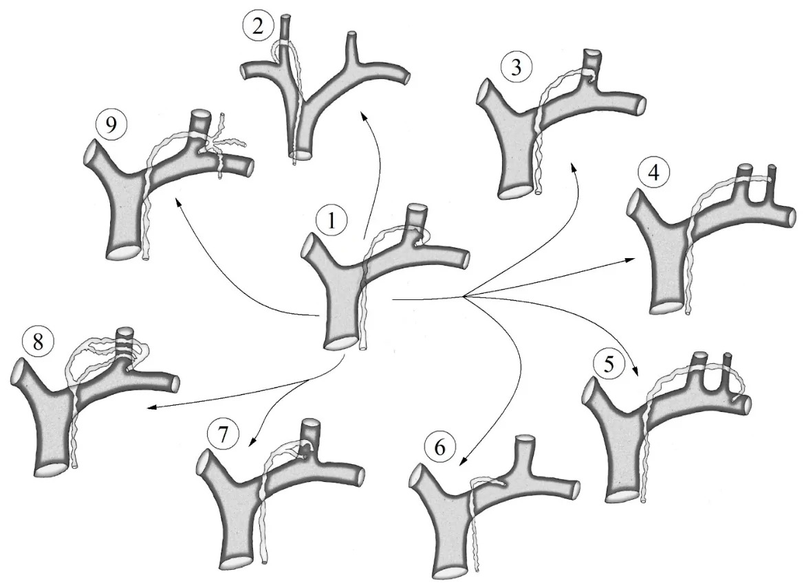
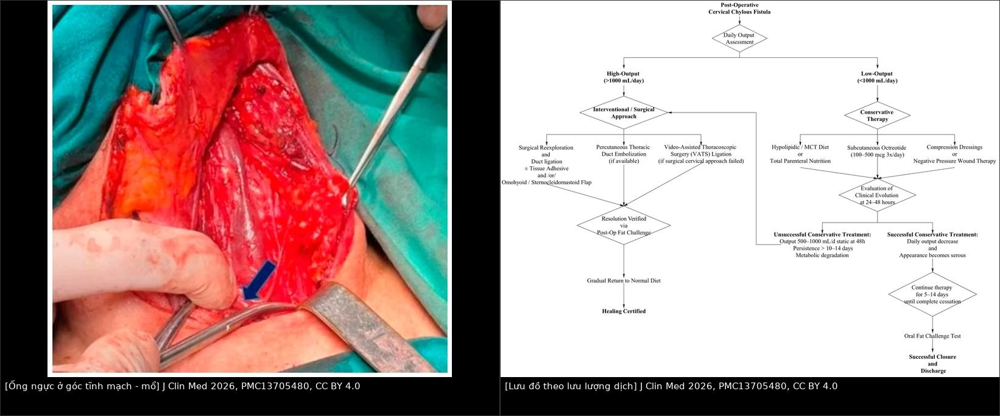
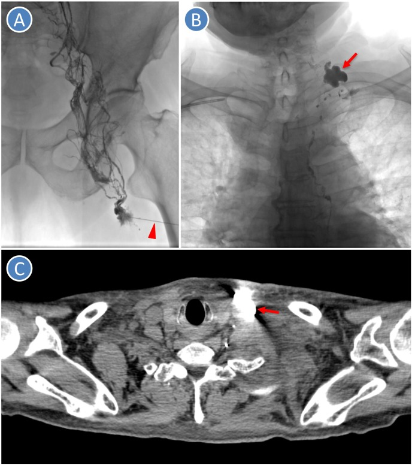

1896 — Rò dưỡng trấp CỔ sau nạo hạch cổ / Cervical chylous fistula
Tags: pattern:ro-duong-trap pattern:ro-bach-huyet pattern:dich-co-tu vung:co-canh vung:hach-co protocol:CT-co protocol:chup-bach-huyet score:TG-dich
Mức chắc chắn (certainty): tổng hợp y văn (literature synthesis) — biên từ tổng quan có hệ thống hóa về rò dưỡng trấp cổ sau nạo hạch vì ung thư tuyến giáp (J Clin Med 2026, PMC13705480, CC BY 4.0) và ca rò dưỡng trấp cổ sau nạo hạch điều trị bằng chụp bạch mật Lipiodol trong hạch (J Dent Sci 2024, PMC11010700, CC BY-NC-ND). Nhóm không có bệnh nhân của mình.
Câu chốt: rò dưỡng trấp cổ gần như chỉ xảy ra ở hạch nhóm IV dưới bên TRÁI (góc tĩnh mạch cảnh trong – dưới đòn), nơi ống ngực tận vòng qua 3–4 cm trên xương đòn; phần lớn ca là lưu lượng thấp và đáp ứng nội khoa (ít mỡ/MCT đơn thuần ~50–70%, phối hợp octreotide > 80%), nhưng ngưỡng quyết định là mL/ngày: < 500 → nội khoa**, **500–1.000 → thử 24–48 giờ**, **> 1.000 mL/ngày kéo dài 3 ngày → can thiệp (buộc lại, nút mạch, hoặc VATS). Chốt bản chất dịch không phải màu sữa mà là triglyceride dịch > 100–110 mg/dL + có chylomicron.
1. Tổng quan bệnh học – cơ chế hình ảnh (TẠI SAO)
1.1 Giải phẫu: vì sao nhóm IV trái là "vùng nguy hiểm số một"
- Ống ngực (thoracic duct) đi lên bên phải cột sống, bắt chéo sang trái ở ngực giữa, đi sau thực quản và động mạch cảnh trái, rồi vòng qua (arch) 3–4 cm trên xương đòn và đổ vào góc hợp lưu tĩnh mạch cảnh trong – tĩnh mạch dưới đòn trái. Đoạn tận có van một lá và hai lá chống trào ngược (PMC13705480).
- Nhóm hạch IV (từ xương móng đến bờ trên cán mũi ức) nằm đúng trên đoạn vòng này; mỡ nhóm IV dính vào bao cảnh và không có mô đệm che ống ngực → phẫu tích bằng dao điện/máy hàn dễ cắt hoặc đốt thủng ống ngực mà không thấy chảy máu.
- Bên phải cũng có thể rò nhưng qua ống bạch huyết phải (right lymphatic duct) — ống nhỏ, ít gặp hơn nhiều. Số liệu: nạo hạch bên 0,5–8%, nạo hạch trung tâm < 0,5%, nhóm IV dưới bên trái 2–8%, bên phải 0,5–2% (PMC13705480).
- Biến thể đoạn tận là quy luật: ngoài kiểu điển hình (đổ vào góc cảnh–dưới đòn trái), ống ngực có thể đổ vào TM cảnh trong, TM cảnh ngoài, TM dưới đòn, thân cánh tay đầu phải, hoặc chia 2–3 nhánh đổ riêng; còn có ba thân bạch huyết tận (thân cảnh, thân dưới đòn, thân trung thất–phế quản). Vì vậy buộc "một ống" có thể bỏ sót nhánh thứ hai (PMC13705480, Fig. 4).

1.2 Phân biệt bằng tên gọi — sai tên là sai điều trị
- Rò dưỡng trấp (chylous fistula / chyle leak): dịch giàu lipid, trắng sữa hoặc óng ánh, từ tổn thương ống ngực, ống bạch huyết phải hoặc nhánh tận lớn.
- Rò bạch huyết thường (lymphatic fistula / lymphorrhea): dịch trong, ít lipid, từ vi mạch bạch huyết nhỏ bị cắt; nếu ứ lại thành ổ gọi là lymphocele.
- Hệ quả: lymphorrhea thường tự hết và không cần octreotide liều cao, còn chyle leak thật mới gây mất lympho bào, giảm albumin, hạ natri–clo–calci và hoại tử vạt da cổ do phản ứng viêm của dưỡng trấp (PMC13705480).
1.3 Vật lý – sinh hóa: TẠI SAO màu sữa không đủ và TẠI SAO cần triglyceride
- Màu sữa do tán xạ ánh sáng của hạt chylomicron (đường kính µm) — chỉ có khi bệnh nhân đang ăn mỡ. Bệnh nhân nhịn ăn, nuôi tĩnh mạch, hoặc ăn ít mỡ → dịch trong, vàng dù vẫn rò ống ngực. Vì thế màu sắc có độ nhạy thấp, không dùng để loại trừ.
- Ngưỡng: triglyceride dịch > 100–110 mg/dL (hoặc cao hơn TG huyết thanh) → rò dưỡng trấp; < 50 mg/dL và dịch trong → lymphorrhea; tiêu chuẩn vàng là điện di lipoprotein thấy chylomicron (dương tính = chốt) (PMC13705480).
- Nghiệm pháp mỡ (oral fat test): cho bệnh nhân kem/sữa béo/dầu → rò dưỡng trấp thật tăng mạnh thể tích và độ đục trong vài giờ, còn lymphorrhea không đổi. Đây cũng là nghiệm pháp xác nhận đã lành trước khi cho ăn lại bình thường.
- Trên hình ảnh: dịch dưỡng trấp có đậm độ gần nước (0–20 HU), không ngấm thuốc, trùng với seroma/lymphocele/máu tụ cũ → CT và siêu âm chỉ trả lời "có ổ dịch ở đâu, có chèn ép mạch/khí quản không", không trả lời "dịch gì". Chỉ chụp bạch mật (Lipiodol) mới thấy đường đi và điểm thoát, vì iod trong Lipiodol hấp thụ tia X mạnh (cản quang cao) và dầu giữ lại tại chỗ rò.
- Vì sao Lipiodol có thể chữa: dầu ứ tại điểm rò gây phản ứng viêm xơ tại chỗ + độ nhớt cao → bịt lỗ rò; hiệu quả thấy sau ~1 tuần (PMC11010700).
1.4 Số phải nhớ
- Tần suất: 0,5–8% sau nạo hạch cổ bên trong mổ tuyến giáp; 2–8% ở nhóm IV dưới trái; < 0,5% nạo hạch trung tâm (PMC13705480).
- Phân độ theo lưu lượng: thấp < 500 mL/ngày**, **cao 500–1.000 mL/ngày**, **rất cao > 1.000 mL/ngày (theo Delaney); cách chia khác: < 300 / 300–600 / > 600 mL/ngày (Leović) (PMC13705480).
- Hiệu quả điều trị: ít mỡ/MCT đơn thuần ~50–70%; octreotide phối hợp > 80%, tác dụng giảm lưu lượng trong 24–48 giờ, liều 100–500 µg dưới da × 3 lần/ngày (PMC13705480).
- Tiêu chuẩn thất bại nội khoa: lưu lượng > 1.000 mL/ngày kéo dài > 3 ngày dù đã nhịn ăn/điều trị tối ưu; hoặc không có xu hướng giảm / còn rò > 10–14 ngày; hoặc 500–1.000 mL/ngày kèm suy chuyển hóa → can thiệp (PMC13705480).
- Ca minh họa (nam 73 tuổi, nạo hạch cổ trái): ngày 3 ra dịch trong, amylase cao → tưởng rò tuyến mang tai, mổ lại sau 2 tuần; 1 tuần sau mổ lại dịch ra nhiều, TG cao → đúng là rò dưỡng trấp; TPN + băng ép + octreotide thất bại; chụp bạch mật Lipiodol trong hạch bẹn → thấy điểm rò vùng cổ trên trái, hết rò sau 1 tuần (PMC11010700).
2. Mẫu hình + chẩn đoán phân biệt theo vị trí (Gamut)
- A — Dịch trắng sữa/óng ánh ra từ dẫn lưu hoặc vết mổ cổ bên TRÁI, ngày 1–3: gamut hẹp, nghĩ rò dưỡng trấp trước tiên; sau đó lymphorrhea, rò tuyến dưới hàm/tuyến mang tai (amylase cao), seroma, tụ máu, áp-xe sớm, rò dịch não tủy (nếu mổ có vào ống sống — hiếm ở cổ).
- B — Dịch trong, lượng nhiều, "không mùi", amylase cao: đừng vội kết luận rò nước bọt — dưỡng trấp cũng chứa amylase và điện giải; trong ca minh họa, chẩn đoán trễ 3 tuần vì lý do này (PMC11010700).
- C — Ổ dịch khu trú vùng cổ bên (không rò ra ngoài): lymphocele, tụ máu, áp-xe, di trú dưỡng trấp dưới cân; CT thấy ổ dịch đậm độ dịch, có thể đè tĩnh mạch cảnh trong gây phù mặt–cổ hoặc chèn khí quản.
- D — Rò lượng lớn kèm khó thở: nghĩ tràn dưỡng trấp màng phổi (chylothorax) do tổn thương vòm màng phổi, hoặc chèn ép khí quản do ổ dịch cổ — bắt buộc X-quang/CT ngực và đánh giá đường thở.
3. Bảng so sánh phân biệt (ma trận đối chiếu)
| Thực thể (entity) | Hình ảnh / dịch điển hình | Chốt vào (rule-in) | Chốt loại (rule-out) | Gợi ý xác nhận |
|---|---|---|---|---|
| Rò dưỡng trấp cổ (chyle leak) | Dịch trắng sữa/óng ánh, 0–20 HU trên CT; ổ dịch ở nhóm IV trái; đầy nhanh sau bữa ăn | TG dịch > 100–110 mg/dL hoặc > TG huyết thanh, chylomicron (+) trên điện di; tăng mạnh khi cho ăn mỡ | TG < 50 mg/dL, dịch trong, không đổi khi ăn mỡ → lymphorrhea; amylase rất cao đơn thuần → rò nước bọt | TG + cholesterol + protein + điện giải + tế bào + điện di lipoprotein; nghiệm pháp mỡ |
| Rò bạch huyết thường (lymphorrhea) | Dịch trong, vàng nhạt, lượng < 100–150 mL/ngày, giảm dần | TG thấp (< 50 mg/dL), không có chylomicron, giảm dần trong vài ngày | Tăng khi ăn mỡ, TG > 110 → dưỡng trấp | TG + nghiệm pháp mỡ; theo dõi thể tích |
| Rò tuyến nước bọt (tuyến mang tai/dưới hàm) | Dịch trong, dính, chảy nhiều khi ăn/nghĩ đến thức ăn | Amylase dịch rất cao (hàng nghìn U/L), TG thấp | TG > 110 mg/dL + chylomicron → dưỡng trấp | Amylase + TG dịch; không đáp ứng băng ép thì chụp tuyến |
| Lymphocele / seroma | Ổ dịch khu trú, không rò ra ngoài, 0–20 HU, vỏ mỏng | Dịch trong, TG thấp, không tăng khi ăn mỡ, tự giảm | Tăng thể tích nhanh + đục + TG cao → rò dưỡng trấp | Siêu âm + chọc hút; theo dõi 1–2 tuần |
| Tụ máu / máu tụ cổ | 35–70 HU, tăng đậm độ, có thể đè khí quản | Hct dịch ≈ Hct máu, đông cục, Hb tụt | Dịch loãng, không đông → không phải máu | Hct dịch; CT không cản quang |
| Áp-xe cổ | Ổ dịch vách dày, ngấm thuốc viền, khí trong ổ | Sốt, cấy (+), bạch cầu tăng, dịch đục mủ | Dịch sữa vô khuẩn, cấy (−) → dưỡng trấp | CT có cản quang + cấy; chọc dưới siêu âm |
Ảnh ghép đối chiếu (trái: ống ngực tận ở góc tĩnh mạch trong mổ; phải: lưu đồ xử lý theo lưu lượng dịch):

4. Protocol chụp + phân độ theo lưu lượng và thuật toán xử trí
4.1 Trình tự chẩn đoán – hình ảnh
- Đo và ghi thể tích dẫn lưu 24 giờ mỗi ngày (cộng cả hai bên nếu đặt hai dẫn lưu) — đây là biến số trung tâm của mọi quyết định.
- Siêu âm cổ tại giường: xác định ổ dịch, vách, quan hệ với tĩnh mạch cảnh trong, khí quản; hướng dẫn chọc hút lần đầu.
- CT cổ có cản quang, lát ≤ 1 mm: khi ổ dịch lớn, nghi chèn ép đường thở/mạch, hoặc cần phân biệt áp-xe/tụ máu/lymphocele; đánh giá diện tích ổ dịch theo dõi.
- X-quang/CT ngực: bắt buộc khi khó thở, nghi chylothorax (tổn thương vòm màng phổi).
- Chụp bạch mật trong hạch (intranodal lymphangiography) bằng Lipiodol dưới siêu âm + huỳnh quang: chỉ định khi lưu lượng cao hoặc nội khoa thất bại; vừa định vị vừa điều trị. Đường vào: hạch bẹn hai bên, kim 22 G, bơm chậm; có thể nút mạch bổ sung (coil/keo NBCA) hoặc buộc ống ngực qua nội soi lồng ngực (VATS) nếu cần.
- Không chọc hút lặp nhiều lần ổ dịch sát mạch cảnh khi chưa loại trừ giả phình/tổn thương mạch — kiểm tra mạch máu trên siêu âm Doppler/CTA trước.
4.2 Bộ xét nghiệm dịch tối thiểu (lần chọc đầu)
Triglyceride, cholesterol, protein, albumin, amylase, điện giải (Na, Cl, Ca), đếm tế bào (lympho %), cấy + điện di lipoprotein tìm chylomicron. So sánh TG dịch với TG huyết thanh cùng lúc.
4.3 Phân độ và ngưỡng xử trí
| Mức | Lưu lượng 24 giờ | Xử trí |
|---|---|---|
| Thấp | < 500 mL/ngày | Ít mỡ/MCT ± TPN; octreotide 100 µg ×3/ngày (tới 500 µg ×3); băng ép/áp lực âm; theo dõi 5–7 ngày |
| Cao | 500–1.000 mL/ngày | Thử nội khoa có thời hạn 24–48 giờ; nếu suy chuyển hóa hoặc không giảm → can thiệp |
| Rất cao | > 1.000 mL/ngày hoặc > 3 ngày không giảm, hoặc rò > 10–14 ngày | Buộc lại ống ngực ± keo sinh học ± vạt cơ (omohyoid/ức–đòn–chũm), nút mạch qua da, hoặc VATS buộc ống ngực |
flowchart TD
A["Rò dịch qua vết mổ cổ sau nạo hạch"] --> B["Đo thể tích 24 giờ + chọc hút xét nghiệm dịch"]
B --> C{"TG > 110 mg/dL hoặc chylomicron (+)"}
C -->|Không| D["Lymphorrhea hoặc rò nước bọt - điều trị theo nguyên nhân"]
C -->|Có| E["Rò dưỡng trấp - ít mỡ/MCT + octreotide + băng ép"]
E --> F{"Lưu lượng 24 giờ"}
F -->|"< 500 mL"| G["Tiếp tục nội khoa 5-7 ngày"]
F -->|"500-1000 mL"| H["Thử 24-48 giờ, theo dõi điện giải/albumin"]
F -->|"> 1000 mL"| I["Chụp bạch mật trong hạch bằng Lipiodol"]
H -->|Không giảm hoặc suy chuyển hóa| I
G -->|Hết rò| J["Nghiệm pháp mỡ rồi ăn lại"]
I --> K{"Hết rò sau 1 tuần?"}
K -->|Có| J
K -->|Không| L["Buộc lại ống ngực ± vạt cơ hoặc VATS"]
5. Biến thể bình thường và cạm bẫy
- "Dịch trong thì không phải dưỡng trấp": sai — bệnh nhân nhịn ăn/nuôi tĩnh mạch không có chylomicron để tán xạ ánh sáng; luôn đo TG trước khi kết luận.
- "Amylase cao là rò nước bọt": đây là bẫy đã làm trễ chẩn đoán 3 tuần trong ca minh họa, dẫn tới một cuộc mổ lại không cần thiết; dưỡng trấp có amylase, nên phải đo TG song song (PMC11010700).
- Cạm bẫy "băng ép thật mạnh + hút áp lực cao": hút mạnh làm tăng lưu lượng và kéo dài rò (giảm áp lực mô quanh lỗ rò, ngăn dính); áp lực âm liên tục chỉ dùng có kiểm soát, không thay thế chế độ ăn và octreotide.
- Tưởng nhầm ổ dịch là "hạch còn sót/tái phát" trên siêu âm theo dõi: ổ dịch đậm độ dịch, bờ đều, không có hilum khác hạch; đừng chọc hút sinh thiết mù khi chưa loại trừ lymphocele (nguy cơ rò kéo dài).
- Biến thể ống ngực là lý do buộc một lần vẫn rò: kiểm tra lại bằng chụp bạch mật, tìm nhánh thứ hai hoặc ba thân tận; đừng mổ lại "mò" mà không có bản đồ.
- Biến chứng toàn thân dễ bị bỏ qua: hạ natri, hạ clo, hạ calci, giảm albumin, lympho bào giảm → tăng nhiễm trùng vết mổ và hoại tử vạt da cổ; theo dõi điện giải hằng ngày ở ca lưu lượng cao.
6. Tự lượng giá — Blind Quiz ngay trên trang tĩnh
Ca 1 — nam 73 tuổi, nạo hạch cổ trái vì di căn lưỡi

- Gợi ý lâm sàng: ngày 3 ra dịch trong, amylase cao → mổ lại sau 2 tuần; 1 tuần sau mổ lại rò nhiều, TG cao; TPN + băng ép + octreotide không hiệu quả.
- Câu hỏi: (1) Ảnh A/B/C cho thấy gì và tại sao chụp từ hạch bẹn? (2) Vì sao Lipiodol có thể chữa rò? (3) Khi nào nên làm trước khi mổ lại?
Bấm để hiện đáp án (findings + chẩn đoán)
- Dấu hiệu: A — bơm Lipiodol từ hạch bẹn trái, thấy chuỗi bạch huyết đi lên và dừng/ứ ở vùng cổ dưới trái (mũi tên đỏ nhỏ); B — ứ Lipiodol thành đám ở cổ trên trái = điểm rò; C — CT ngang: khối cản quang cao ở khoang cổ bên trái (mũi tên đỏ) tương ứng vị trí rò.
- Chẩn đoán: rò dưỡng trấp cổ sau nạo hạch (nhóm IV trái, đoạn tận ống ngực) — chẩn đoán muộn vì giai đoạn đầu dịch trong + amylase cao bị đọc là rò tuyến mang tai.
- Cơ chế chữa: Lipiodol ứ tại lỗ rò → viêm xơ tại chỗ + độ nhớt cao → bịt rò; trong ca này hết rò sau 1 tuần, tránh được mổ lại.
- Nguồn ảnh: J Dent Sci 2024, Fig. 1, PMC11010700, CC BY-NC-ND 4.0 (nguyên bản).
Ca 2 — nữ 48 tuổi, ngày 3 sau nạo hạch cổ trái, dẫn lưu 1.200 mL/ngày
- Gợi ý lâm sàng (ca minh họa dựng theo ngưỡng của nguồn 1 — không phải ca nguyên văn): dịch trắng sữa, TG dịch 640 mg/dL, natri 130 mmol/L, albumin 27 g/L, không khó thở.
- Câu hỏi: (1) Xếp mức lưu lượng? (2) Vì sao không "chờ 2 tuần nội khoa"? (3) Ba lựa chọn can thiệp và tiêu chí chọn?
Bấm để hiện đáp án (findings + chẩn đoán)
- Dấu hiệu: ảnh trái — ống ngực tận ở góc tĩnh mạch cảnh trong–dưới đòn (mũi tên xanh) đúng nơi phẫu tích nhóm IV; ảnh phải — lưu đồ: > 1.000 mL/ngày → can thiệp, nhánh nội khoa chỉ dành cho < 1.000 mL/ngày với đánh giá lại sau 24–48 giờ.
- Chẩn đoán: rò dưỡng trấp lưu lượng rất cao (> 1.000 mL/ngày) kèm hạ natri + giảm albumin = tiêu chuẩn thất bại nội khoa sớm; chờ lâu sẽ mất dịch – điện giải – lympho bào và hoại tử vạt da.
- Can thiệp: (1) chụp bạch mật trong hạch ± nút mạch (ít xâm lấn, làm trước); (2) mổ lại buộc ống ngực ± keo sinh học ± vạt omohyoid/ức–đòn–chũm; (3) VATS buộc ống ngực khi mổ cổ thất bại. Xác nhận lành bằng nghiệm pháp mỡ trước khi ăn lại.
- Nguồn ảnh: J Clin Med 2026, Fig. 5–6, PMC13705480, CC BY 4.0 (ghép bằng
tools/make_composite.py).
Ca 3 — bệnh nhân rò lại sau khi đã buộc ống ngực một lần
- Gợi ý lâm sàng: đã buộc "thân ống ngực" ở cổ, dịch giảm 2 ngày rồi tăng lại; TG dịch vẫn > 300 mg/dL.
- Câu hỏi: (1) Vì sao buộc một lần thất bại? (2) Hình 1–9 mô tả gì? (3) Bước tiếp theo?
Bấm để hiện đáp án (findings + chẩn đoán)
- Dấu hiệu: sơ đồ 9 kiểu đoạn tận ống ngực — kiểu 1 điển hình (đổ vào góc cảnh–dưới đòn trái); kiểu 2–6 đổ vào TM cảnh trong/cảnh ngoài/dưới đòn/thân cánh tay đầu phải; kiểu 7–8 chia 2–3 nhánh; kiểu 9 có 3 thân tận (thân cảnh, dưới đòn, trung thất–phế quản).
- Chẩn đoán: rò từ nhánh tận thứ hai chưa được buộc — buộc "một ống" không đủ khi có biến thể nhiều nhánh.
- Bước tiếp: chụp bạch mật trong hạch để lập bản đồ đoạn tận trước khi mổ lại; nếu không nút được → mổ lại buộc toàn bộ vùng góc tĩnh mạch + vạt cơ hoặc VATS.
- Nguồn ảnh: J Clin Med 2026, Fig. 4, PMC13705480, CC BY 4.0.
Bài liên quan chéo
- 1887 – Rò dưỡng trấp sau cắt thực quản
- 1857 – Tràn dưỡng trấp màng phổi sau mổ cột sống
- 1767 – Phù bạch mạch đầu cổ sau xạ
- 750 – Hạch cổ theo phân khu & TI-RADS hạch
- 1855 – LVA chuyển hướng ống ngực
- 1874 – Hạ calci máu sau cắt tuyến giáp
Ảnh
1896_ro-duong-trap-co-sau-nao-hach_SODO-PMC13705480.jpg,..._MO-PMC13705480.jpg,..._SODO2-PMC13705480.jpg— J Clin Med 2026, Fig. 4–6, PMC13705480, CC BY 4.0.1896_ro-duong-trap-co-sau-nao-hach_LYMPHANGIO-PMC11010700.jpg— J Dent Sci 2024, Fig. 1, PMC11010700, CC BY-NC-ND 4.0.composite_on-goc-tinh-mach-va-luu-do.jpg— ghép từ 2 ảnh CC BY 4.0 của PMC13705480 (letterbox, không crop/kéo giãn).- Nguồn + giấy phép từng file:
images/CREDITS.md.
Không dùng để chẩn đoán độc lập khi chưa có người hướng dẫn.